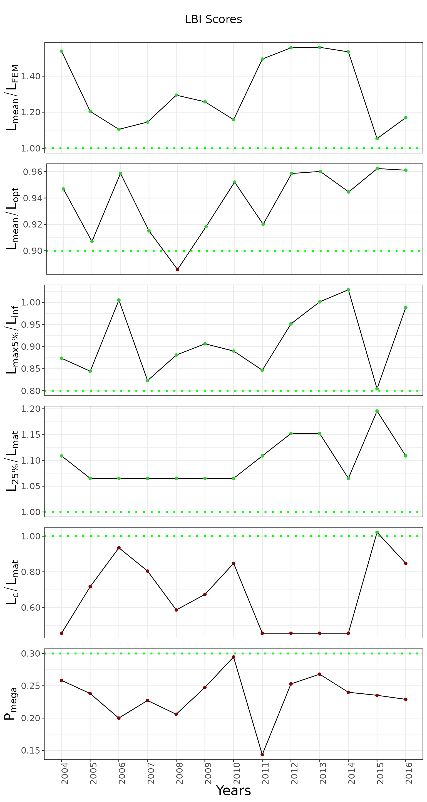

running-chartlbi
running-prettylbi.Rmd1. Installing chartlbi package
For this vigenette to work chartlbi must be installed
and exist in R’s default libpath.
# devtools::install_github("d2gex/chartlbi")2. Reading the sample data
A data sample of a demersal species from the northern waters of the Iberian peninsula has been provided. Although the data has been made up, the details should be pretty realistic. The timeseries stretches from 2004 to 2016. A sample of the matrix is showed below.
length_freq_matrix <- readRDS("data/demersal_fish_sample.rds")
head(length_freq_matrix)
#> MeanLength X2004 X2005 X2006 X2007 X2008 X2009 X2010 X2011 X2012 X2013 X2014
#> 1 10.5 1 0 1 0 1 0 1 1 1 1 1
#> 2 11.5 1 0 1 0 1 0 1 1 1 1 1
#> 3 12.5 1 0 1 0 1 0 1 1 1 1 1
#> 4 13.5 1 0 1 0 26 0 1 1 1 1 1
#> 5 14.5 1 0 1 0 26 0 1 1 1 1 1
#> 6 15.5 0 0 1 0 26 1 1 1 1 1 1
#> X2015 X2016
#> 1 0 1
#> 2 0 1
#> 3 0 1
#> 4 0 1
#> 5 0 1
#> 6 0 13. Running chartlbi
Running chartlbi is pretty simple. It only requires 4
parameters:
- Data results from the LBI algorithm
- A context shaping the visualisation of the results. You may not need to change the default values to start with.
- The thresholds against which the results will be evaluated. Default values have been provided, and you will hardly ever need to modify this.
- The order you would like the indicator to appear following a bottom-top approach.
# (1) Define biological inputs and size of class length
params <- list(
binwidth = 1,
linf = 49.1,
l50 = 23
)
# (2) Define the context used to graph the results. Default values provided at instantiation time. However
# you can modify them as suits you best as PlotContext$new returns a R6 object
stack_plot_context <- chartlbi::PlotContext$new()
# (3) Define the threshold over which the LBI indicators will be evaluated. Default values provided at instantiation time.
thresholds <- chartlbi::Thresholds
# (5) Define indicator order you want them to be shown as
column_order <- list('Pmega', 'Lc_Lmat', 'L25_Lmat', 'Lmax5_Linf', 'Lmean_Lopt', 'Lmean_Lfem')
# (4) Run the LBI algorithm
lbi <- chartlbi::LbiAlgo$new(length_freq_matrix, params)
results <- lbi$run()
# (5) Plot the results
lbi_plotter <- chartlbi::OutputPlotter$new(results, stack_plot_context, thresholds)
graph <- lbi_plotter$build_plots(column_order)
graph